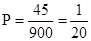
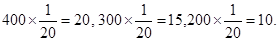
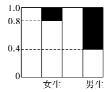

← 概率资料目录考点 29 · 抽样 · 练习
资料来源：学科网一轮复习笔记 · 共 11 题
第 1 题
1．某工厂利用随机数表对生产的600个零件进行抽样测试，先将600个零件进行编号，编号分别为001，002，…，599，600从中抽取60个样本，如下提供随机数表的第4行到第6行：
32
21 18 34 29 78 64 54 07 32 52 42 06 44 38 12 23 43 56 77 35 78 90 56
42
84
42 12 53 31 34 57 86 07 36 25 30 07 32 86 23 45 78 89 07 23 68 96 08
04
32
56 78 08 43 67 89 53 55 77 34 89 94 83 75 22 53 55 78 32 45 77 89 23
45
若从表中第6行第6列开始向右依次读取3个数据，则得到的第6个样本编号为（ ）
A．522 B．324 C．535 D．578
查看答案与解析
【答案】D
【解析】第 行第
列开始的数为
（不合适），
，
（不合适），
，
，
，
（不合适），
（不合适），
，
（重复不合适），
行第
列开始的数为
（不合适），
，
（不合适），
，
，
，
（不合适），
（不合适），
，
（重复不合适），
则满足条件的6个编号为
，
，
，
，
，
则第6个编号为
本题正确选项：
第 2 题
2．某公司要从员工号为1到300的员工中抽取5人进行培训，若用系统抽样的方法，则选取的5名员工的编号可能是（
）
A．10，20，30，40，50 B．5，10，15，20，25
C．5，65，125，185，245 D．1，2，3，4，5
查看答案与解析
【答案】C
【解析】由题知，系统抽样的间隔为组距，每部分选取的号码间隔为60.故选:C
第 3 题
3．已知总体由编号为01，02，…，19，20的20个个体组成.利用下面的随机数表选取6个个体，选取方法是从随机数表第1行的第5列和第6列数字开始由左到右依次选取两个数字，则选出来的第5个个体的编号为___________.
7816
6572 0802 6314 0702 4369 9728 0198
3204
9234 4935 8200 3623 4869 6938 7481
查看答案与解析
【答案】01
【解析】从随机数表第1行的第5列和第6列数字开始由左到右依次选取两个数字开始向右读，第一个数为65，不符合条件，第二个数为72，不符合条件，第三个数为08，符合条件，以下符合条件依次为：08,02,14,07,01，故第五个数为01.故答案为：01
第 4 题
4．总体由编号为01，02，
，29，30的30个个体组成，现从中抽取一个容量为6的样本，请以随机数表第1行第5列开始，向右读取，则选出来的第5个个体的编号为________.
70
29 17 12 13 40 33 12 38 26 13 89 51 03
56
62 18 37 35 96 83 50 87 75 97 12 55 93
查看答案与解析
【答案】03
【解析】从随机数表第1行第5列开始，向右读取，依次选取两个数字中小于30的编号依次为17，12，13，26，03则第5个个体的编号为03.故答案为：03
第 5 题
1．某县共有300个村，现采用系统抽样方法，抽取15个村作为样本，调查农民的生活和生产状况，将300个村编上1到300的号码，求得间隔数
，即每20个村抽取一个村，在1到20中随机抽取一个数，如果抽到的是7，则从41到60这20个数中应取的号码数是（
）
A．45 B．46 C．47 D．48
查看答案与解析
【答案】C
【解析】根据题意，样本间隔数
，在1到20中抽到的是7，
则41到60为第3组，此时对应的数为7+2×20＝47.故选：C.
第 6 题
2．某印刷厂的工人师傅为了了解
个印张的质量，采用系统抽样的方法抽取若干个印张进行检查，为此先对
个印章进行编号为：
，已知抽取的印张中最小的两个编号为
，则抽取的印张中最大的编号为_______.
查看答案与解析
【答案】95
【解析】设抽到编号为
，即
，令
，即
，则当
时，
的最大值为95，故最大编号为95.
故答案为：95.
第 7 题
1．某公司生产三种型号的轿车，产量分别为1600辆、6000辆和2000辆，为检验公司的产品质量，现从这三种型号的轿车中抽取48辆进行检验，这三种型号的轿车依次应抽取
(
)
A．16，16，16 B．12，27，9 C．8，30，10 D．4，33，11
查看答案与解析
【答案】C
【解析】这三种型号的轿车依次应抽取
选C.
第 8 题
2．某校高一年级有1200名学生，高二年级有1000名学生，高三年级有800名学生，现要从该校全体学生中抽取100人进行视力检查，应从高一年级抽取（
）人
A．30 B．40 C．50 D．60
查看答案与解析
【答案】B
【解析】现要从该校全体学生中抽取100人进行视力检查，应从高一年级抽取
，故选B．
第 9 题
3．某学校有高中学生900人，其中高一有400人，高二300人，高三200人，采用分层抽样的方法抽取一个容量为45的样本，那么高一、高二、高三各年级抽取的学生人数为（
）
A．30、10、5 B．25、15、5 C．20、15、10 D．15、15、15
查看答案与解析
【答案】C
【解析】易知每个学生被抽取的概率

.所以根据随机抽样的定义，高一、高二、高三各年级被抽取的人数为
故选C
第 10 题
4．某工厂生产甲、乙、丙三种型号的产品，产品数量之比为3：5：7，现用分层抽样的方法抽出容量为n的样本，其中甲种产品有18件，则样本容量n=（ ）
A．45 B．54 C．90 D．126
查看答案与解析
【答案】C
【解析】A种型号产品所占的比例为
，
，故样本容量n=90．
故选C．
第 11 题
5．如图是调查某学校高三年级男女学生是否喜欢数学的等高条形图，阴影部分的高表示喜欢数学的频率．已知该年级男生女生各500名（所有学生都参加了调查），现从所有喜欢数学的同学中按分层抽样的方式抽取32人，则抽取的男生人数为

A．16 B．32 C．24 D．8
查看答案与解析
【答案】C
【解析】由等高条形图可知：喜欢数学的女生和男生的比为1:3，所以抽取的男生数为24人．故选C．